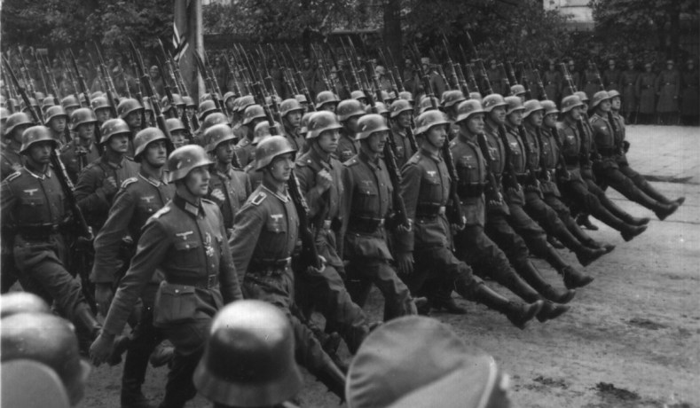

De Oorlog
 Aan het eind van de Eerste Wereldoorlog lag Europa in puin. Het hele continent stond op zijn kop, zelfs buiten Europa. De Centrale mogendheden die bestonden Duitsland, Oostenrijk-Hongarije, Bulgarije en het Ottomaans Rijk hadden de oorlog verloren tegen de Entente mogendheden Frankrijk, het Britse Rijk en de Verenigde Staten. Duitsland werd als de hoofdschuldige van de oorlog aangewezen door de geallieerden. Het land moest miljarden herstelbetalingen betalen aan, vooral aan Frankrijk. Daarbij moesten ze ook nog eens land afstaan aan de pasgeboren Poolse staat en Frankrijk. Niet alleen land in Europa, maar ook hun kolonies in Afrika en Azie.
De Interbellum
 Aan het eind
Aan het eind